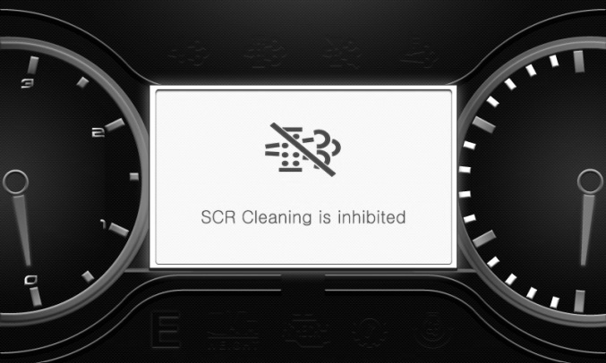

The ECU attempts to start SCR cleaning during working—“automatic SCR cleaning”—at a proper
moment after determining the moment. Once automatic SCR cleaning starts, the high temperature
indicator lamp lights up with a popup appearing for the operator to notice it.
<Display that notifies the operator of automatic SCR cleaning >
If automatic SCR cleaning is failed due to a low exhaust temperature, you should perform it
after the vehicle stops. Therefore, it is recommended to keep the vehicle working as far as
possible in order to ensure automatic SCR cleaning is fully completed. While automatic SCR
cleaning is being carried out, exhaust emissions above 500°C may cause fires or burns.
Setting this switch to position "3" prohibits automatic SCR Cleaning in an environment
subject to dust, explosion or regulated noise level. At position "3", a pop-up appears as
shown below:

<SCR Cleaning inhibited>
If automatic SCR cleaning is failed, you should carry it out a while after the vehicle starts
working.
A pop-up on the SCR Display warns the operator to perform SCR Cleaning. (3 warnings: at 10
hrs remaining, 5 hrs remaining, Immediate)
<Exemplary warning – 10 hrs remaining>
Limit the engine power and stop the current work when SCR cleaning is not used; you will be
violating the exhaust regulations if you do not.
To carry out SCR cleaning safely, observe the following steps:
Park the vehicle at a safe place. White smoke can be emitted during SCR Cleaning.
Remove the flammable material or stained oil from exhaust system. High temperature of
exhaust system and gas can cause fire.
Engage the parking brake, and make sure the gear is in neutral.
Allow engine to warm up sufficiently; the SCR cleaning is not possible in cold
condition.
After holding down the switch at the “3” position for three seconds, check that SCR
cleaning has started.
Once SCR cleaning finishes, the LCD display will show a notification.
Press this switch and release it after 3 sec, SCREEN Cleaning will be started and the engine
speed will be increased. Screen pop-up provides information on the warning up and cleaning
process.
.png)

.png)